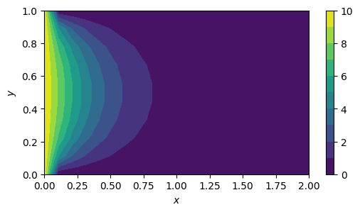
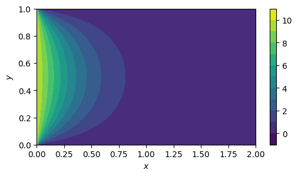

Finite Difference Methods
Contents
Finite Difference Methods#
二阶导数估计#
import sympy as sp
def removeSub(expr):
if isinstance(expr, sp.Subs):
return expr.args[0].replace(expr.args[1][0], expr.args[2][0])
for arg in expr.args:
expr = expr.replace(arg, removeSub(arg))
return expr
def getDeviationEstimator(steps=[-1, 0, 1], k=2, verbose=False):
N = len(steps)
h, x, x0, dx = sp.symbols('h x, x_0, \Delta{x}')
u = sp.Function('u')
left = u(x).diff(x, k)
right = 0
for idx, step in enumerate(steps):
tmp_param = sp.symbols(chr(ord('A') + idx))
right += tmp_param * u(x + step*h)
if verbose:
display(sp.Eq(left, right))
u_taylor = removeSub(u(x).series(x, x0, N).subs(x, x0+dx)).subs(x0, x)
taylors_dict = {}
for step in steps:
tmp = u_taylor.subs(dx, step*h)
taylors_dict[u(x+step*h)] = tmp
if step != 0 and verbose:
display(sp.Eq(u(x+step*h), tmp))
right_taylor = right.xreplace(taylors_dict).expand()
equ_taylor = right_taylor - left
line_eqs = []
for idx in range(N):
tmp = equ_taylor.coeff(u(x).diff(x, idx))
if verbose:
display(tmp)
line_eqs.append(tmp)
params = line_eqs[0].args
solution = sp.linsolve(line_eqs, params)
param_dict = {}
for param, k in zip(params, solution.args[0]):
param_dict[param] = k
residual = equ_taylor.xreplace(param_dict)
if verbose:
display(residual)
result = 0
for step, k in zip(steps, solution.args[0]):
result += u(x+step*h) * k
if verbose:
display(sp.Eq(left, result.simplify()))
return result
estimator1 = getDeviationEstimator([-1, 0, 1])
display(estimator1)
estimator2 = getDeviationEstimator([0, 1, 2])
display(estimator2)
estimator3 = getDeviationEstimator([-2, -1, 0])
display(estimator3)
\[\displaystyle - \frac{2 u{\left(x \right)}}{h^{2}} + \frac{u{\left(- h + x \right)}}{h^{2}} + \frac{u{\left(h + x \right)}}{h^{2}}\]
\[\displaystyle \frac{u{\left(x \right)}}{h^{2}} - \frac{2 u{\left(h + x \right)}}{h^{2}} + \frac{u{\left(2 h + x \right)}}{h^{2}}\]
\[\displaystyle \frac{u{\left(x \right)}}{h^{2}} + \frac{u{\left(- 2 h + x \right)}}{h^{2}} - \frac{2 u{\left(- h + x \right)}}{h^{2}}\]
estimator1 = getDeviationEstimator([-2, -1, 0, 1, 2])
display(estimator1)
estimator2 = getDeviationEstimator([-1, 0, 1, 2, 3])
display(estimator2)
estimator3 = getDeviationEstimator([0, 1, 2, 3, 4])
display(estimator3)
estimator4 = getDeviationEstimator([-3, -2, -1, 0, 1])
display(estimator4)
estimator5 = getDeviationEstimator([-4, -3, -2, -1, 0])
display(estimator5)
\[\displaystyle - \frac{5 u{\left(x \right)}}{2 h^{2}} - \frac{u{\left(- 2 h + x \right)}}{12 h^{2}} + \frac{4 u{\left(- h + x \right)}}{3 h^{2}} + \frac{4 u{\left(h + x \right)}}{3 h^{2}} - \frac{u{\left(2 h + x \right)}}{12 h^{2}}\]
\[\displaystyle - \frac{5 u{\left(x \right)}}{3 h^{2}} + \frac{11 u{\left(- h + x \right)}}{12 h^{2}} + \frac{u{\left(h + x \right)}}{2 h^{2}} + \frac{u{\left(2 h + x \right)}}{3 h^{2}} - \frac{u{\left(3 h + x \right)}}{12 h^{2}}\]
\[\displaystyle \frac{35 u{\left(x \right)}}{12 h^{2}} - \frac{26 u{\left(h + x \right)}}{3 h^{2}} + \frac{19 u{\left(2 h + x \right)}}{2 h^{2}} - \frac{14 u{\left(3 h + x \right)}}{3 h^{2}} + \frac{11 u{\left(4 h + x \right)}}{12 h^{2}}\]
\[\displaystyle - \frac{5 u{\left(x \right)}}{3 h^{2}} - \frac{u{\left(- 3 h + x \right)}}{12 h^{2}} + \frac{u{\left(- 2 h + x \right)}}{3 h^{2}} + \frac{u{\left(- h + x \right)}}{2 h^{2}} + \frac{11 u{\left(h + x \right)}}{12 h^{2}}\]
\[\displaystyle \frac{35 u{\left(x \right)}}{12 h^{2}} + \frac{11 u{\left(- 4 h + x \right)}}{12 h^{2}} - \frac{14 u{\left(- 3 h + x \right)}}{3 h^{2}} + \frac{19 u{\left(- 2 h + x \right)}}{2 h^{2}} - \frac{26 u{\left(- h + x \right)}}{3 h^{2}}\]
estimator1 = getDeviationEstimator([-1, 0, 1], k=1)
display(estimator1)
estimator2 = getDeviationEstimator([0, 1, 2], k=1)
display(estimator2)
estimator3 = getDeviationEstimator([-2, -1, 0], k=1)
display(estimator3)
\[\displaystyle - \frac{u{\left(- h + x \right)}}{2 h} + \frac{u{\left(h + x \right)}}{2 h}\]
\[\displaystyle - \frac{3 u{\left(x \right)}}{2 h} + \frac{2 u{\left(h + x \right)}}{h} - \frac{u{\left(2 h + x \right)}}{2 h}\]
\[\displaystyle \frac{3 u{\left(x \right)}}{2 h} + \frac{u{\left(- 2 h + x \right)}}{2 h} - \frac{2 u{\left(- h + x \right)}}{h}\]
estimator1 = getDeviationEstimator([0, 1, 2, 3, 4], k=1)
display(estimator1)
estimator2 = getDeviationEstimator([-1, 0, 1, 2, 3], k=1)
display(estimator2)
estimator3 = getDeviationEstimator([-2, -1, 0, 1, 2], k=1)
display(estimator3)
estimator4 = getDeviationEstimator([-3, -2, -1, 0, 1], k=1)
display(estimator4)
estimator5 = getDeviationEstimator([-4, -3, -2, -1, 0], k=1)
display(estimator5)
\[\displaystyle - \frac{25 u{\left(x \right)}}{12 h} + \frac{4 u{\left(h + x \right)}}{h} - \frac{3 u{\left(2 h + x \right)}}{h} + \frac{4 u{\left(3 h + x \right)}}{3 h} - \frac{u{\left(4 h + x \right)}}{4 h}\]
\[\displaystyle - \frac{5 u{\left(x \right)}}{6 h} - \frac{u{\left(- h + x \right)}}{4 h} + \frac{3 u{\left(h + x \right)}}{2 h} - \frac{u{\left(2 h + x \right)}}{2 h} + \frac{u{\left(3 h + x \right)}}{12 h}\]
\[\displaystyle \frac{u{\left(- 2 h + x \right)}}{12 h} - \frac{2 u{\left(- h + x \right)}}{3 h} + \frac{2 u{\left(h + x \right)}}{3 h} - \frac{u{\left(2 h + x \right)}}{12 h}\]
\[\displaystyle \frac{5 u{\left(x \right)}}{6 h} - \frac{u{\left(- 3 h + x \right)}}{12 h} + \frac{u{\left(- 2 h + x \right)}}{2 h} - \frac{3 u{\left(- h + x \right)}}{2 h} + \frac{u{\left(h + x \right)}}{4 h}\]
\[\displaystyle \frac{25 u{\left(x \right)}}{12 h} + \frac{u{\left(- 4 h + x \right)}}{4 h} - \frac{4 u{\left(- 3 h + x \right)}}{3 h} + \frac{3 u{\left(- 2 h + x \right)}}{h} - \frac{4 u{\left(- h + x \right)}}{h}\]
def getDeviationEstimatorCoeff(steps=[-1, 0, 1]):
u = sp.Function('u')
x, h = sp.symbols('x, h')
estimator = getDeviationEstimator(steps)
coeff = []
for step in steps:
coeff.append(estimator.coeff(u(x + step*h)/h**2).evalf())
return coeff
coeff = getDeviationEstimatorCoeff()
coeff
[1.00000000000000, -2.00000000000000, 1.00000000000000]
import numpy as np
def getAB(N=5, NX=10, NY=10):
a = np.arange(N).reshape((1, -1))
steps_arr = a - a.T
coeff_arr = []
for steps in steps_arr:
coeff = getDeviationEstimatorCoeff(steps)
coeff_arr.append(coeff)
coeff_arr = np.array(coeff_arr, dtype=np.float64)
def getDevEstMatrix(NX):
coeff_idx_arr = (N-1)//2 * np.ones(NX)
coeff_idx_arr[:(N-1)//2] = np.arange((N-1)//2)
coeff_idx_arr[-(N-1)//2:] = np.arange((N+1)//2, N)
coeff_idx_arr = coeff_idx_arr.astype(int)
A = np.zeros((NX, NX))
for idx, coeff_idx in enumerate(coeff_idx_arr):
A[idx, idx-coeff_idx:idx+N-coeff_idx] = coeff_arr[coeff_idx]
return A
A = getDevEstMatrix(NY)
B = getDevEstMatrix(NX).T
return A, B
A, B = getAB(N=3, NX=5, NY=5)
print(A)
print(B)
[[ 1. -2. 1. 0. 0.]
[ 1. -2. 1. 0. 0.]
[ 0. 1. -2. 1. 0.]
[ 0. 0. 1. -2. 1.]
[ 0. 0. 1. -2. 1.]]
[[ 1. 1. 0. 0. 0.]
[-2. -2. 1. 0. 0.]
[ 1. 1. -2. 1. 1.]
[ 0. 0. 1. -2. -2.]
[ 0. 0. 0. 1. 1.]]
Finite Difference Method#
\[
\frac{\partial^2 u(x, y)}{\partial x^2} + \frac{\partial^2 u(x, y)}{\partial y^2} = C(x, y)
\]
\[
\frac{\partial^2 u(x, y)}{\partial x^2} = AU,
\frac{\partial^2 u(x, y)}{\partial y^2} = UB
\]
https://math.stackexchange.com/questions/186598/how-to-solve-matrix-equation-axxb-c-for-x $\( \begin{aligned} &AU + UB = C \\ &(I^T_B \otimes A) vec(U) + (B^T \otimes I_A) vec(U) = vec(C) \\ &(I^T_B \otimes A + B^T \otimes I_A) vec(U) = vec(C) \\ &vec(U) = (I^T_B \otimes A + B^T \otimes I_A)^{-1} vec(C) \end{aligned} \)$
\[
0 < x < 1, 0 < y < 1.
\]
\[\begin{split}
D = \begin{bmatrix}
0 & 0 & \dots & 0 & 0 \\
0 & 1 & \dots & 0 & 0\\
\vdots & \vdots & \ddots & \vdots & \vdots \\
0 & 0 & \dots & 1 & 0 \\
0 & 0 & \dots & 0 & 0 \\
\end{bmatrix}
\end{split}\]
For some boundary condition \(U_0\), we have
\[\begin{split}
\begin{cases}
U - D_A U D_B = U_0 - D_A U_0 D_B \\
D_AAUD_B + D_A U B D_B = D_A C D_B\\
\end{cases}
\end{split}\]
\[\begin{split}
\begin{cases}
[I_B \otimes I_A - D_B^T \otimes D_A] \cdot vec(U) = vec(U_0 - D_A U_0 D_B) \\
[D_B^T \otimes (D_AA) + (BD_B)^T \otimes D_A] \cdot vec(U) = vec(D_A C D_B)\\
\end{cases}
\end{split}\]
import numpy as np
import matplotlib.pyplot as plt
def runFinitDifferenceMethod(N=3, NX=20, NY=10):
xrange = np.linspace(0, 2.0, NX)
yrange = np.linspace(0, 1.0, NY)
dx = xrange[1]-xrange[0]
dy = yrange[1]-yrange[0]
X, Y = np.meshgrid(xrange, yrange)
C = np.zeros_like(X)
A, B = getAB(N, NX, NY)
A /= dy**2
B /= dx**2
IA, DA, IB, DB = np.eye(NY), np.eye(NY), np.eye(NX), np.eye(NX)
DA[0][0], DA[-1][-1], DB[0][0], DB[-1][-1] = 0, 0, 0, 1
U0 = np.zeros_like(X)
U0[:, 0] = 10
K1 = np.kron(IB, IA) - np.kron(DB.T, DA)
K2 = np.kron(DB.T, DA @ A) + np.kron((B @ DB).T, DA)
C1 = U0 - DA @ U0 @ DB
C2 = DA @ C @ DB
C1_vec = C1.T.reshape(-1)
C2_vec = C2.T.reshape(-1)
C_vec = C1_vec + C2_vec
K = K1 + K2
U_vec = np.linalg.inv(K) @ C_vec
U = U_vec.reshape((NX, -1)).T
return U
def plotU(U):
NX = U.shape[1]
NY = U.shape[0]
xrange = np.linspace(0, 2.0, NX)
yrange = np.linspace(0, 1.0, NY)
dx = xrange[1]-xrange[0]
dy = yrange[1]-yrange[0]
X, Y = np.meshgrid(xrange, yrange)
plt.rcParams['figure.figsize'] = 6, 3
plt.contourf(X.T, Y.T, U.T, 10)
plt.colorbar()
plt.xlabel(r'$x$')
plt.ylabel(r'$y$')
U = runFinitDifferenceMethod(3, 20, 10)
plotU(U)

N, NX, NY = 5, 100, 100
U = runFinitDifferenceMethod(N, NX, NY)
plotU(U)

NY, NX = 5, 4
IA, DA = np.eye(NY), np.eye(NY)
DA[0][0], DA[-1][-1] = 0, 0
IB, DB = np.eye(NX), np.eye(NX)
DB[0][0], DB[-1][-1] = 0, 1
C = np.random.randn(NY, NX)
display(DA, DB, C, DA @ C @ DB, C - DA @ C @ DB)
array([[0., 0., 0., 0., 0.],
[0., 1., 0., 0., 0.],
[0., 0., 1., 0., 0.],
[0., 0., 0., 1., 0.],
[0., 0., 0., 0., 0.]])
array([[0., 0., 0., 0.],
[0., 1., 0., 0.],
[0., 0., 1., 0.],
[0., 0., 0., 1.]])
array([[ 0.37040525, -0.68011563, -1.07456394, 2.03584458],
[ 1.26483766, -1.26418632, -0.38430087, -0.98268573],
[-1.61966331, 0.08911528, 0.48449128, -1.29157204],
[ 0.06854995, 0.22642158, 1.51892589, -0.75226202],
[ 0.23114794, -2.62695702, 0.38198424, 0.19528542]])
array([[ 0. , 0. , 0. , 0. ],
[ 0. , -1.26418632, -0.38430087, -0.98268573],
[ 0. , 0.08911528, 0.48449128, -1.29157204],
[ 0. , 0.22642158, 1.51892589, -0.75226202],
[ 0. , 0. , 0. , 0. ]])
array([[ 0.37040525, -0.68011563, -1.07456394, 2.03584458],
[ 1.26483766, 0. , 0. , 0. ],
[-1.61966331, 0. , 0. , 0. ],
[ 0.06854995, 0. , 0. , 0. ],
[ 0.23114794, -2.62695702, 0.38198424, 0.19528542]])